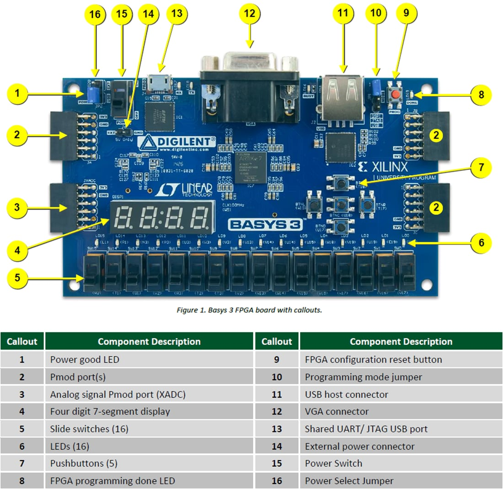
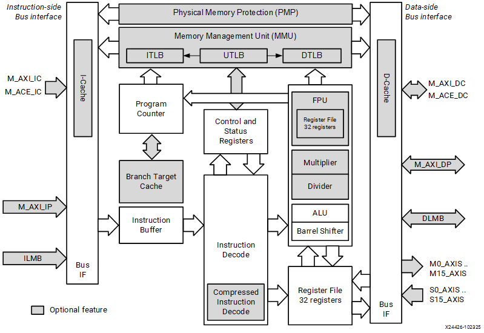
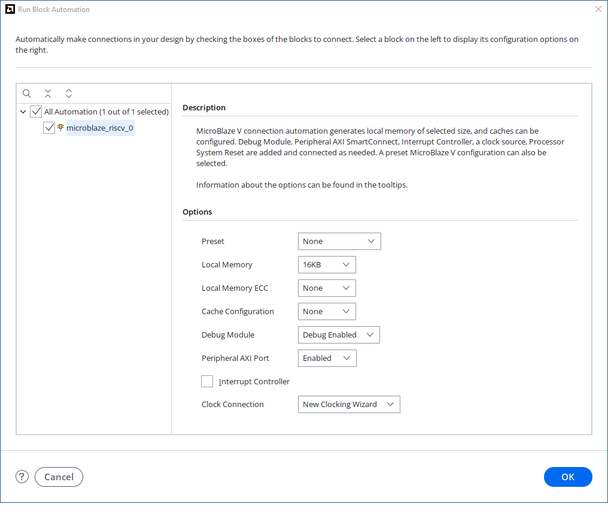
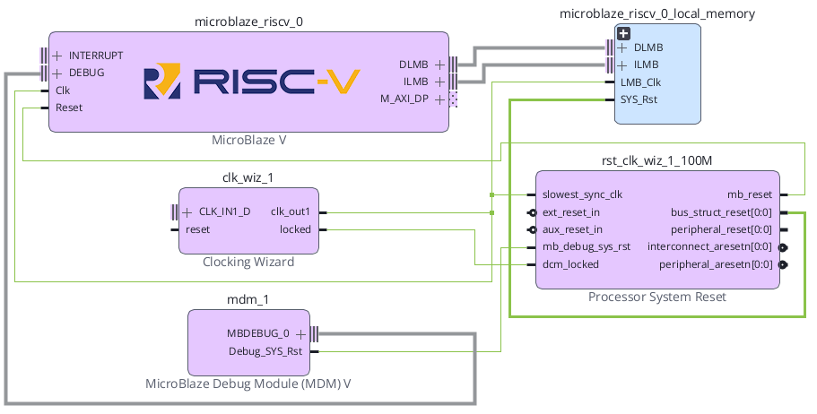

CPU
FPGA Fabric에 구현되는 MicroBlaze V를 사용한다.
Basys3 SoC + NPU · SoC 01
Basys3의 Artix-7 FPGA 내부에 MicroBlaze V(마이크로블레이즈 브이) CPU와 Local BRAM을 구성하고, Clock·Reset·Debug까지 연결해 이후 AXI 주변장치와 NPU를 확장할 기준 SoC를 만든다.
FPGA Fabric에 구현되는 MicroBlaze V를 사용한다.
ILMB/DLMB를 통해 공통 Block RAM에 접근한다.
MicroBlaze V · Local BRAM 계층 생성과 Block Design 저장까지 확인한다. 외부 Clock/Reset 연결 및 첫 Validate는 SoC 02에서 진행한다.
SoC 01은 이후 확장의 기준이 되는 MicroBlaze V · Local BRAM IP 기본 구성을 생성하고 저장한다. Clock/Reset의 외부 연결과 빌드는 SoC 02에서 완료하며, GPIO·UART·Timer·Interrupt·Custom AXI IP·NPU는 포함하지 않는다.
MicroBlaze V를 FPGA 내부에 구성한다.
명령과 데이터를 저장할 BRAM을 붙인다.
자동 생성된 Clock/Reset IP와 내부 연결을 확인한다. Basys3 외부 입력 포트 연결은 SoC 02에서 완료한다.
Local Memory 16 KB 구성과 Block Design 저장을 확인한다. Validate 및 후속 빌드는 SoC 02 연결 이후 진행한다.
Basys3는 Artix-7 XC7A35T-1CPG236C를 사용하며, 보드에는 100 MHz 단일 Oscillator가 있다. Digilent Reference Manual은 이 Clock이 FPGA의 W5 핀에 연결되어 있음을 명시한다.

| 항목 | Basys3 기준 | SoC 01에서의 사용 |
|---|---|---|
| FPGA | XC7A35T-1CPG236C | MicroBlaze V·BRAM·Clock/Reset IP가 모두 이 FPGA 내부에 구현된다. |
| 기준 Clock | 100 MHz | Clocking Wizard 입력 |
| Clock Pin | W5 | Top/BD 외부 Clock 포트와 XDC 연결 |
| Reset 입력 | Center Button BTNC, pin U18 | 실습용 외부 Reset으로 사용 |
| BRAM 자원 | 1,800 Kbits | 초기 Local Memory 16 KB 구성에 충분한 온칩 자원 |
MicroBlaze V는 AMD FPGA에 구현하도록 설계된 RISC Soft Processor이다. 내부에는 Program Counter, Instruction Decode, Register File, ALU 등이 있고 양쪽에 Instruction-side/Data-side bus interface가 있다.

핵심은 “CPU가 BRAM 하나를 쓴다”에서 끝내지 않고, 명령어 Fetch 경로와 Data Load/Store 경로가 논리적으로 분리되어 있다는 것을 Block Design에서 확인하는 것이다.
LMB(Local Memory Bus)는 FPGA 내부 Block RAM에 빠르게 접근하기 위한 간결한 Local Bus이다. AMD UG1711는 Instruction LMB와 Data LMB가 각각 LMB BRAM Interface Controller를 통해 공통 Block RAM에 연결되는 구성을 일반적인 MicroBlaze V Local Memory 구조로 설명한다.
| 경로 | 버스와 컨트롤러 | 도착점 |
|---|---|---|
| microblaze_riscv_0 / ILMB | ilmb_v10 → lmb_bram_if_cntlr | 공통 Block Memory Generator |
| microblaze_riscv_0 / DLMB | dlmb_v10 → lmb_bram_if_cntlr | 공통 Block Memory Generator |
| 인터페이스 | 주 역할 | 실행 관점 |
|---|---|---|
| ILMB | Instruction Local Memory Bus | PC가 가리키는 명령어 Fetch |
| DLMB | Data Local Memory Bus | 변수·Stack·Data Load/Store |
| BRAM | Program + Data Local Memory | 초기 Bare-metal 실행 저장공간 |
0x00000000을 기준으로 사용한다. 실제 프로그램 배치와 linker 영역은 SoC 03의 Software 실행 단계에서 확인한다.Vivado에서 Create Project를 선택하고 새 RTL Project를 만든다.
RTL Project를 선택한다. 지금 단계에서는 Verilog 기능 모듈을 추가하지 않아도 된다.
재현성을 위해 Part 기준으로 xc7a35tcpg236-1을 선택한다. Digilent Board File이 설치되어 있다면 Board 탭의 Basys3를 선택해도 된다.
예: soc01_microblaze_bram. 경로에는 한글·공백·특수문자를 가급적 사용하지 않는다.
Create Block Design을 선택한다.
soc01_mb_bram으로 지정한다. 이후 HDL Wrapper 이름과 연결되므로 의미 있는 이름을 사용한다.
Diagram Canvas가 열리면 아직 아무 IP도 없는 상태가 정상이다.
Diagram의 + 또는 우클릭 → Add IP를 선택한다.
MicroBlaze V를 검색하여 추가한다. CPU 인스턴스는 microblaze_riscv_0로 확인한다.
Canvas에 microblaze_riscv_0가 추가되고 ILMB, DLMB, Clock, Reset, Debug/AXI 관련 인터페이스가 보이는지 확인한다.
_0, _1 번호는 프로젝트 상황에 따라 달라질 수 있다. 번호가 아니라 IP 종류와 인터페이스를 기준으로 확인한다.CPU 설정은 32비트 주소·RV32IM, Area 최적화, 캐시·FPU·Atomic·Compressed·RV32E·MMU 없음으로 맞춘다. Debug는 활성화하고 MDM V를 연결한다.
MicroBlaze V를 추가하면 Designer Assistance가 활성화된다. Run Block Automation을 실행한다.

| 항목 | 설정 | 이유 |
|---|---|---|
| Preset | None | 자동 고성능 구성이 아니라 최소 구조를 직접 확인한다. |
| Local Memory | 16 KB | 초기 Bare-metal 실습에 충분하며 구조 확인이 쉽다. |
| Local Memory ECC | None | 첫 단계에서 ECC 복잡도를 제외한다. |
| Cache Configuration | None | Local BRAM 동작을 먼저 이해한다. |
| Debug Module | Debug Enabled | 후속 Vitis/JTAG Debug를 위해 MDM V을 유지한다. |
| Peripheral AXI Port | Enabled | SoC 06 이후 AXI Peripheral 확장을 위해 유지하며, SoC 01에서는 연결하지 않는다. |
| Interrupt Controller | Off | Interrupt는 후속 장에서 별도로 추가한다. |
| Clock Connection | New Clocking Wizard | Basys3 100 MHz 기준 Clock을 시스템 Clock으로 만든다. |

그림을 “블록이 많이 생겼다”로 끝내지 말고 아래 순서로 추적한다.
| 구성 | 연결 |
|---|---|
| clk_wiz_* / Clocking Wizard | clk_out1 → 시스템 클록 |
| microblaze_riscv_0 + Local Memory | ILMB → Local Memory / DLMB → Local Memory |
| proc_sys_reset / Processor System Reset | mb_reset → MicroBlaze V / bus_struct_reset → Bus |
| AXI 리셋 | peripheral_aresetn / interconnect_aresetn → AXI 계층 |
| mdm_* / MicroBlaze Debug Module V | DEBUG 인터페이스 |
microblaze_riscv_0_local_memory와 같은 Hierarchical Block을 열어 ILMB Controller, DLMB Controller, Block Memory Generator가 실제로 존재하는지 확인한다.
Block Automation으로 생성된 Clocking Wizard와 Processor System Reset의 존재 및 내부 연결을 확인한다. 현재는 외부 Basys3 Clock/Reset이 미연결일 수 있으며, Run Connection Automation과 외부 포트의 실제 연결은 SoC 02 SECTION 12에서 진행한다.
Clocking Wizard locked → Processor System Reset dcm_lockedClocking Wizard clk_out1 → MicroBlaze V Clock 및 Local Memory Clockext_reset_inmb_resetclk_wiz/locked와 proc_sys_reset/dcm_locked 연결을 빠뜨리면 안 된다. Reset이 정상 해제되지 않아 CPU가 계속 Reset 상태에 머물 수 있다.BTNC를 누르면 High가 되는 조건에 맞춰 Active-High 입력으로 맞춘다. SoC 02에서 Reset 동기화와 출력 극성을 더 깊게 다룬다.MDM V/Debug_SYS_Rst → Processor System Reset/mb_debug_sys_rst 및 미사용 aux_reset_in의 연결/고정도 SoC 02에서 설정하고 검증한다.
Digilent Basys-3-Master.xdc를 프로젝트에 추가하고 Clock과 Center Button Reset에 사용할 제약을 확인한다. 외부 포트 clk, btnC의 실제 연결과 이름 일치는 SoC 02에서 완료한다.
## Clock signal
set_property -dict { PACKAGE_PIN W5 IOSTANDARD LVCMOS33 } [get_ports clk]
create_clock -add -name sys_clk_pin -period 10.00 -waveform {0 5} [get_ports clk]
## Center Button : Reset
set_property -dict { PACKAGE_PIN U18 IOSTANDARD LVCMOS33 } [get_ports btnC]| XDC | 의미 | 검증 |
|---|---|---|
PACKAGE_PIN W5 | Basys3 100 MHz oscillator | Reference Manual의 Oscillators/Clocks 절과 일치 |
period 10.00 | 100 MHz의 1주기 = 10 ns | Timing Engine에 Primary Clock 정의 |
PACKAGE_PIN U18 | Center Push Button | Digilent Master XDC의 btnC |
clk_0, reset_0처럼 되어 있다면 XDC를 억지로 바꾸기 전에 포트 이름을 먼저 의도한 이름으로 정리한다. HDL/BD 포트명 ↔ XDC get_ports 이름이 정확히 같아야 한다.Ctrl+S로 soc01_mb_bram.bd를 저장한다.
microblaze_riscv_0 및 Local Memory 계층에 ILMB/DLMB Controller와 16 KB BRAM이 존재하는지 확인한다.
자동 생성된 Clocking Wizard 및 Processor System Reset이 존재하는지 확인한다.
XC7A35T-1CPG236C이다.soc01_mb_bram.bd가 생성되었다.soc01_mb_bram.bd를 저장했다.| 문서 | 확인 항목 |
|---|---|
| AMD UG1711 · MicroBlaze V Processor Embedded Design User Guide · 2026.1 | MicroBlaze V 기본 구조, Local Memory Bus, Block Automation 설정, Clock/Reset 연결 흐름 |
| AMD UG994 · Designing IP Subsystems Using IP Integrator · 2026.1 | IP Integrator, Designer Assistance, Run Block Automation, Validate Design, HDL Wrapper |
| AMD UG1629 · MicroBlaze V Processor Reference Guide · 2026.1 | MicroBlaze V Processor Architecture와 Register/Address 구조의 심화 기준 |
| AMD PG164 · Processor System Reset | External/Aux Reset polarity, Reset synchronization과 sequencing |
| Digilent Basys 3 Reference Manual | Artix-7 device, 100 MHz oscillator, W5 Clock pin, 보드 I/O |
| Digilent Basys-3-Master.xdc | W5 Clock, 10 ns constraint, U18 Center Button pin 기준 |